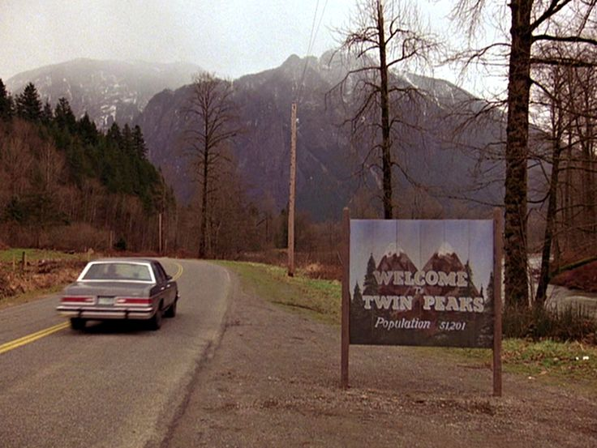
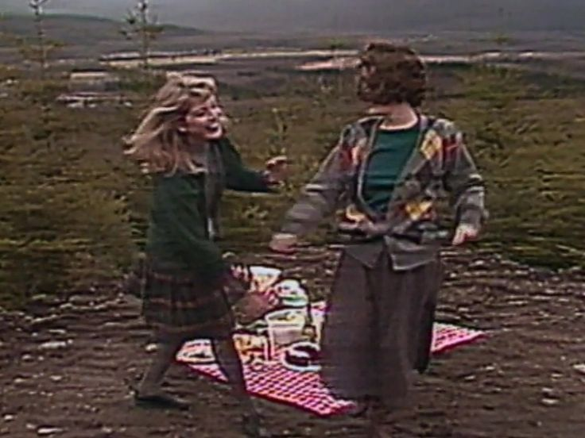
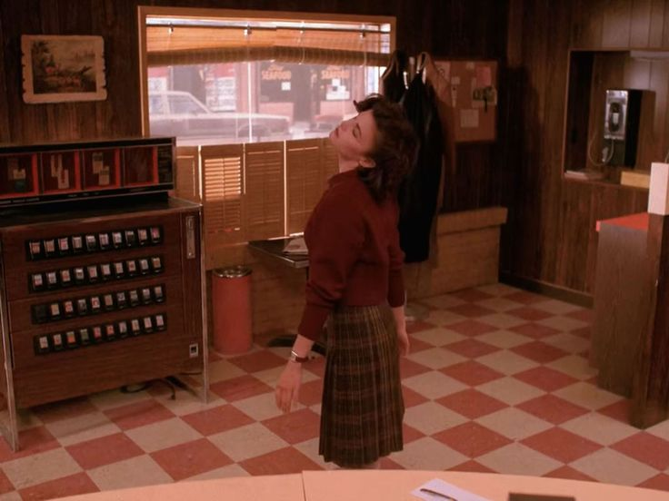
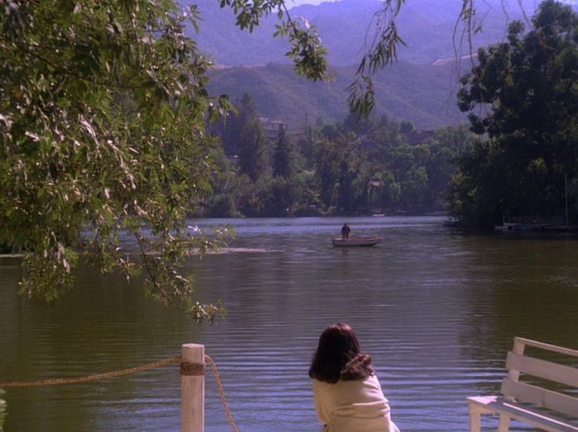
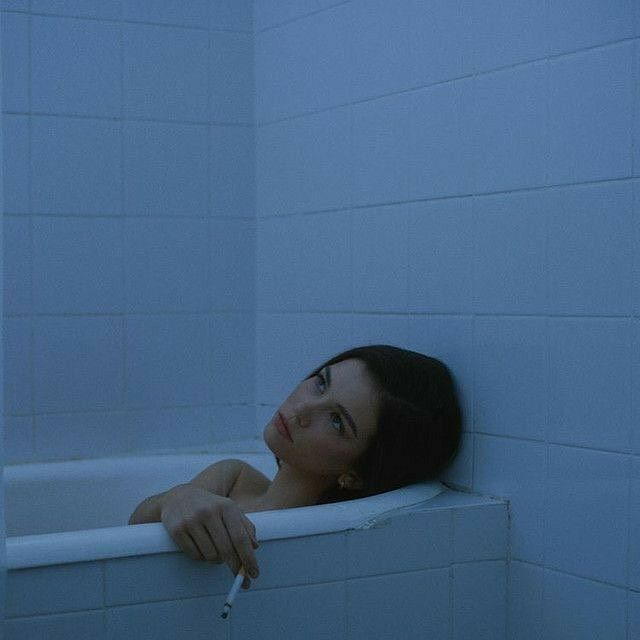
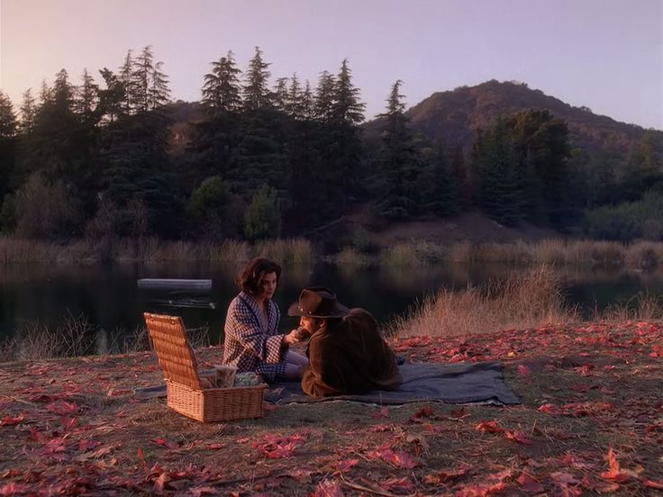

- Az egyik rejtélyes készítő:
 A kezdet: A készítő születésekor a levegőben érezni lehetett valami furcsát. A kisváros, ahol világra jött, egy elhagyott hegyek közé szorított, ködös hely volt, ahol az égbolt sosem volt tiszta, és a fák lombjai suttogó titkokat meséltek a szélnek. Aznap este a hold vörösbe burkolózott, mintha a világ figyelmeztetést kapott volna. Kisgyerekként sosem sírt. Miközben az orvosok rémülten bámultak a csendes, kék szemű gyermekre, az anyja a plafonon lévő pókhálók felé meredt, mintha látott volna valamit, amit más nem. A családja furcsa szokásokat követett. Az apja minden reggel pontosan 4:17-kor kelt fel, hogy egy különös helyi madár énekét hallgassa, amit senki más nem hallott a városban. Az anyja sosem beszélt a múltjáról, még a saját szüleiről sem, és gyakran elfelejtett emberi dolgokat, mint például reggelit készíteni vagy becsukni az ajtót. Sarah gyerekkora olyan volt, mintha egy álom és egy rémálom határán lebegne.
Valahol félúton: Gyerekkorában különleges volt. A barátai azt mondták, hogy gyakran elbámult a távolba, mintha az idő nem érintené. Amikor beszélt, gyakran olyan dolgokról mesélt, amik senki más számára nem voltak valóságosak: egy vörös szobáról, ahol a bútorok suttogtak, vagy a hegyek közötti erdőről, amely éjszakánként énekelt neki. Az iskola nem tudott mit kezdeni vele. A tanárok egyszerre tartottak tőle és csodálták az elméjét. Gyorsan tanult, és minden órán furcsa kérdéseket tett fel, amelyek olyan mélységeket érintettek, amiket senki sem értett. 
Egy nagyvárosi egyetemre került, ahol végre úgy érezte, hogy körülötte minden egyszerűbb lett, mégis valami mélyebb, sötétebb vonzotta vissza a gyökereihez. Az órákon ragyogott, de az estéket mindig egy furcsa napló írásával töltötte, amelyben az álmait rögzítette: álmodott egy óriásról, aki a hegyek fölött állt, és egy baglyot, amely az emberek szemében nézett helyette. Az egyik tanára felfigyelt a különleges gondolataira, és megkérdezte, honnan jönnek ezek a képek. Csak annyit mondott: „Mindig is bennem voltak.” Az egyetemen találkozott emberekkel, akik éppúgy meg voltak győződve arról, hogy az élet egy sötét és rejtélyes színház, mint ő maga. Belépett egy színjátszó körbe, amely éjszakai előadásokat tartott egy öreg, elhagyatott színházban. Az egyik estén, amikor mindenki hazament, Sarah bent maradt. A színpadon állt, és hirtelen a fák susogása hallatszott, mintha a hegyek visszakérnék őt maguk közé.
Az ismertlen jövő: Jövője egyszerre volt nyitott és zárt. Ő maga sem tudta, hogy egy nap a saját történetévé válik-e, vagy valaki más meséli tovább az életét. Az biztos volt, hogy nem marad a városban, ahol az egyetemet végezte. Valami húzta vissza őt a hegyekbe, ahol a hold vörös színét újra látni vélte, és ahol egy nap talán megtudhatja, ki is ő valójában. Története talán véget ér, vagy talán sosem kezdődött el igazán valaki, aki mindig is a világ szélén táncolt.
   - A másik rejtélyes készítő: